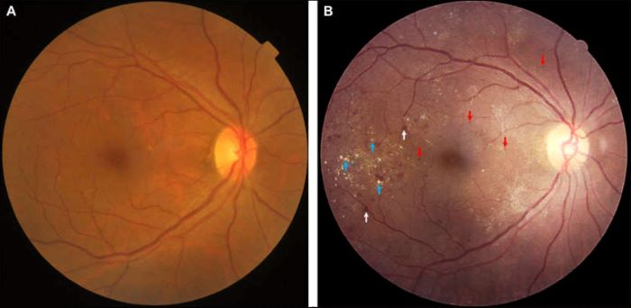
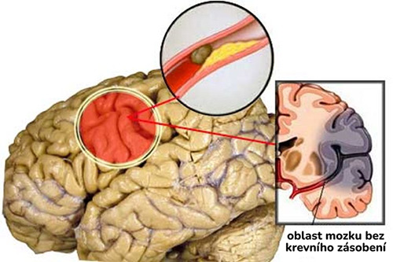
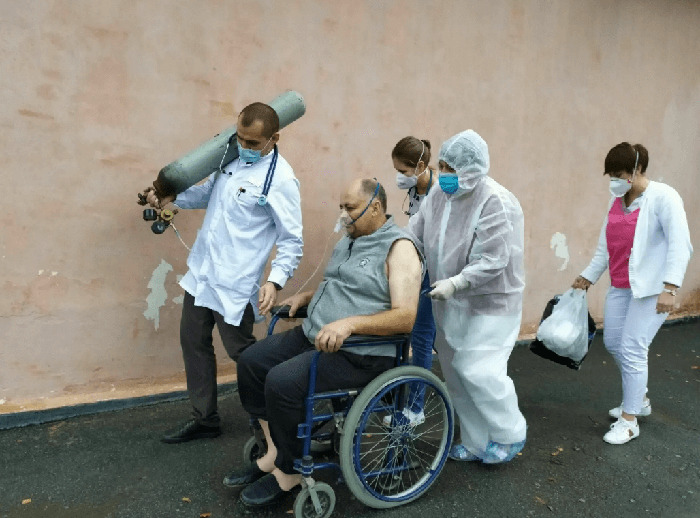
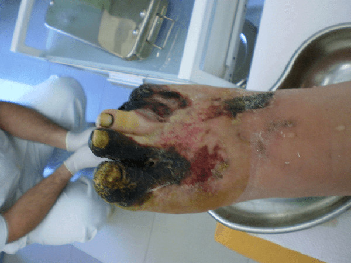

V našem studiu je přední endokrinolog České republiky, doktor Boris Subotić. Dr. Subotić nedávno učinil šokující uznání: "ÚČINNÝ PRODUKT PROTI CUKROVCE JE JIŽ VYTVOŘEN, VYKAZUJE VYNIKAJÍCÍ VÝSLEDKY. ALE LÉKAŘI O NĚM MLČÍ!"
Dr. Boris Subotić má vystudovaný obor medicína a chirurgie, je
specialistou na endokrinologii a výživu.
Boris Subotić v současné době vyučuje na Universitě Karlova v Praze a vykonává lékařskou
praxi v
ATODA Medical - na oddělení komplexní léčby diabetu.
Lidé umírají, a pokud s tím nic neuděláte, tak do roku 2045 onemocní cukrovkou každý pátý člověk v Česku a počet zemřelých na nemoc se zvýší třikrát!
Neznám přesný důvod, ale hádám, že jde jako vždy o výdělek. Nový vývoj umožní pacientům trpícím cukrovkou jednou provždy zbavit se obávaného onemocnění. To znamená, že platy tisíců lékařů se sníží několikanásobně.
Jen se nad tím zamyslete, každý den na cukrovku a její komplikace zemře až pět set našich spoluobčanů. "
Ale když se nad tím zamyslíte, tak takový život není normální. Dokonce i při použití těchto léků musí pacient neustále sledovat hladinu cukru v krvi a používat prostředky ke snížení rezistence buněk.
Spontánně odjet na celý víkend nebo strávit další neplánovanou hodinu na návštěvě-pro diabetika nedostupná možnost. Protože v tomto případě je vysoká pravděpodobnost náhlé komplikace."
Nezávisle sledovat a upravovat hladinu cukru v krvi je velmi obtížné. Pacienti i s desetiletou praxí se mýlí, protože nemohou poskytnout všechny nuance. Pak jsou postiženy takovými komplikacemi, jako jsou:
- Ketoacidóza
Účinky: ztráta vědomí, náhlé narušení životně důležitých orgánů, smrt.
- Hypoglykemie
Účinky: ztráta vědomí, náhlé zvýšení hladiny cukru v krvi v krátkém čase, nedostatek citlivosti na světlo, akutní pocení a křeče. Extrémní forma-kóma.
- Hyperosmatická kóma
Účinky: polydipsie (nadměrná žízeň), polyurie (nadměrné močení).
- Laktacidotická kóma
Účinky: ztráta vědomí, problémy s dýcháním, pokles krevního tlaku a nedostatek močení, stejně jako kardiovaskulární poruchy.
Jedná se o komplikace, které se mohou objevit během několika měsíců po
začátku
vývoje onemocnění.
Během 2-3 let mohou nastat další komplikace, jako jsou:"
1. Retinopatie. Jedná se o poškození sítnice oka, které může vést k krvácení v zadní části oka a oddělení sítnice. Postupně vede k úplné ztrátě zraku.
 A - zdravé oko; B - oko s retinopatií.2. Angiopatie. Vyznačuje se prudkým poklesem propustnosti krevních cév. To přispívá k rozvoji trombózy a aterosklerózy. Zvyšuje se riziko vnitřního nebo cerebrálního krvácení.
3. Polyneuropatie. Je charakterizován ztrátou citlivosti na bolest a teplo v končetinách. První příznaky jsou necitlivost a pálení v končetinách, které se během noci zvyšují. Výsledkem je ztráta kontroly nad končetinami.
4. Diabetická noha. Komplikace, při níž jsou dolní končetiny pacienta pokryty otevřenými ulceracemi, hnisavými vředy, se objevují nekrotické oblasti. Vede k amputaci nebo smrti."
Moji kolegové vědci našli souvislost mezi vývojem diabetu a porušením určité funkce jater. Toto porušení způsobuje zvýšení hladiny volných mastných kyselin, které jsou následně uloženy ve svalové tkáni a způsobují inzulínovou rezistenci.
Nový vzorec prošel rozsáhlým výzkumem. 10 000 dobrovolníků, kteří trpí diabetem typu 2, po dobu 6 týdnů pravidelně užívalo přípravek, na jehož základě byl tento vzorec založen. Výsledky uvedu níže:
- Obnovení funkce jater-98%
- Odstranění nepříjemných příznaků diabetu a zlepšení pohody-99%
- Snížení inzulínové rezistence-95%
- Normalizace hladiny glukózy v krvi-100%
- Snížení cholesterolu-92%"
Účinnost tohoto vývoje je vědecky potvrzena. Výsledný produkt se nazývá .
Práce jater je normalizována, takže hladina volných mastných kyselin klesá. Inzulinová rezistence klesá. Dále se normalizují všechny ostatní ukazatele: cukr, cholesterol, zdravotní stav obecně.
nejen zmírňuje příznaky, dočasně se vrací k normálu glukózy v krvi. "Restartuje" tělo na buněčné úrovni.
Produkt pomáhá eliminovat hlavní příčinu diabetu, čímž stabilizuje cukr v krvi a vrátí pacientovi zdraví po mnoho let."
To vše za účelem vytvoření produktu, který bude vyhovovat všem lidem se stejným problémem-cukrovkou.
A co víc, můžete užívat přípravek pro prevenci. To pomůže vyhnout se rozvoji této nemoci, pokud máte špatnou dědičnost nebo zaznamenáte přítomnost jakýchkoli úzkostných příznaků charakteristických pro Diabetes."

Díky vládnímu programu "NE cukrovce" si můžete objednat doplněk se slevou 50%. Program je bohužel platný pouze do . Takové slevy jsou vzácností. Nenechte si ujít svou šanci!"
Pro vaše pohodlí jsme zveřejnili oficiální objednávkový formulář níže. Jestli chcete si objednát :
- 1. Zadejte jméno a telefonní číslo do speciálních polí níže
- 2. Počkejte, až zavoláte zástupce společností, abyste upřesnili podrobnosti objednávky
- 3. Získejte objednávku do 3-5 dnů. Kurýr doručuje zásilku přímo k vám domů, platba při převzetí.
37